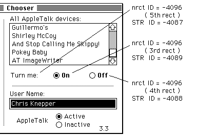

|
|
Beginning with version 3.2, the Chooser has been enhanced to provide support for additional controls.
[Aug 01 1998]
|
As stated in Inside Macintosh IV-217, the Chooser communicates with
device packages as if they were the following function:
FUNCTION Device (message, caller: INTEGER;
objName, zoneName: StringPtr;
p1, p2: LONGINT): OSErr;
|
This function is contained in the device package's 'PACK' -4096 resource. If bit 17 in the
flags field of this 'PACK' is set, the Device function will receive an initialization message
when the user selects that device resource file from the Chooser's window - Device will be called with
message = initMsg. This is the first message that device packages receive and may be used to set up
default configurations. The MPW assembler interface for this new message is:
When the Device function receives initMsg, the
objName parameter contains a pointer to an array of ControlHandles.
For this message (and for the buttonMsg described below) the objName parameter
is a pointer to a structure as follows: it begins with a size word and is followed by at least 4
ControlHandles. The size is at least 18 bytes (2 bytes for the size word and 4 bytes each for
the handles). More handles may be added in the future. The four ControlHandles that
have been defined thus far are the left and right buttons and the "ON" and "OFF"
radio buttons. Their handles appear in this order:
size word
left ControlHandle
right ControlHandle
on ControlHandle
off ControlHandle
...?
The Flags bits of the 'PACK' control which buttons are used. Bits 26
and 27 are used to indicate whether you use the left and right buttons and are described in
the Device Manager chapters in Inside Macintosh volumes IV and V.
Bit 20 tells the Chooser that you are employing the on and off radio buttons.
Their titles can be something other than "ON" and "OFF", of course, but we'll continue to
use those names since that is what the LaserWriter driver (5.0 or later) calls them.
In addition to the controls and their titles, a static label ("Background Printing:"
for the LaserWriter) will be displayed.
The title strings for these radio buttons are contained in the 'STR ' resources with
IDs -4089 and -4088 in the device resource file. The string for the label is contained in 'STR ' resource -4087.
The rectangles for these items are defined in the 'nrct' -4096 resource in the
device resource file. The Device Manager chapter of Inside Macintosh V-430 describes
the 'nrct' resources. The third and fourth rectangles position the radio buttons
while the fifth rectangle positions the label.
For example, the Chooser interface pictured below corresponds to the following Rez input.
/* label for radio buttons */
resource 'STR ' (-4087) {
"Turn me:"
};
/* "off" radio button */
resource 'STR ' (-4088) {
"Off"
};
/* "on" radio button */
resource 'STR ' (-4089) {
"On"
};
resource 'nrct' (-4096) {
{
/* [1] Left Button */
{0, 0, 0, 0},
/* [2] Right Button */
{0, 0, 0, 0},
/* [3] on Radio Button */
{114, 260, 130, 320},
/* [4] off Radio Button */
{114, 330, 130, 390},
/* [5] Label for Radio Buttons */
{114, 177, 130, 250}
}
};
|

If the rectangles for these items are not specified in the 'nrct' resource,
then the Chooser uses default positions for these items from the Chooser's private 'nrct' resource.
These default positions are:
/* [3] on Radio Button */
{114, 272, 130, 332},
/* [4] off Radio Button */
{114, 335, 130, 395},
/* [5] Label for Radio Buttons */
{114, 170, 130, 267},
|
In order for the radio buttons to be displayed, the 'PACK' must call
ShowControl for each of them, and pass in the corresponding ControlHandle. To
turn one of the radio buttons "ON" and the other "off," the 'PACK' must call
SetCtlValue. The best time to call these routines to set up the radio buttons
is when the 'PACK' receives the initMsg. By showing the buttons after
you have set their values, you can avoid unnecessary redrawing.
When the user clicks either of the radio buttons, the 'PACK' receives buttonMsg
and objName contains a pointer to an array of ControlHandles, as explained
above. The 'PACK' knows which of the radio buttons was clicked through the
low-order byte of the p2 parameter. This byte contains 3 if the "ON" radio
button was clicked, or 4 if the "OFF" radio button was clicked. It is the
device package's responsibility to set or clear the radio buttons in
response to the user's action.
Back to top
References
The Device Manager (Volumes II, IV, and V)
The Control Panel (Volume V)
Back to top
Downloadables
|

|
Acrobat version of this Note (120K).
|
Download
|
|